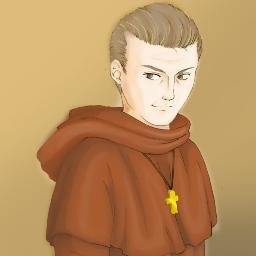

|  | A more shrewd, younger Spanish priest takes over Father Damaso's position as San Diego's friar curate. He is in many ways more dangerous than his predecessor because he is a more skillful tactician who exploits his religious function for both personal vengeance and political power. He constantly quarrels for control with the town's ensign. |